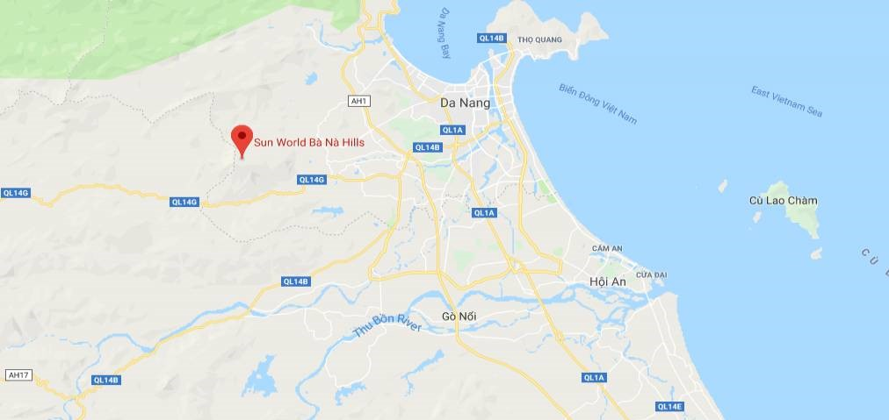
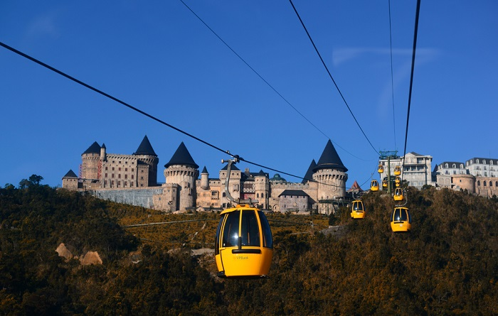
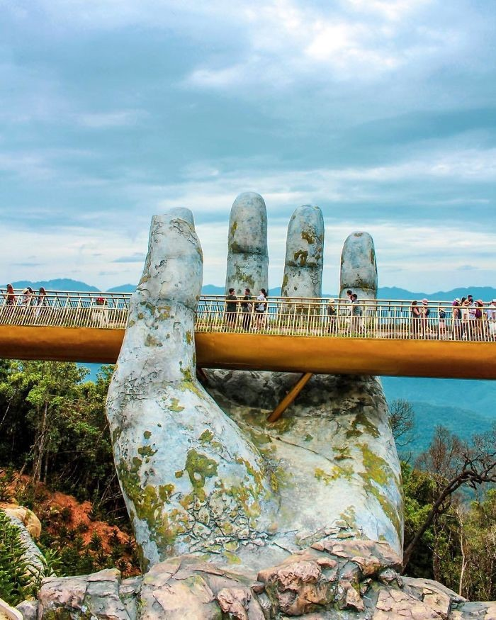
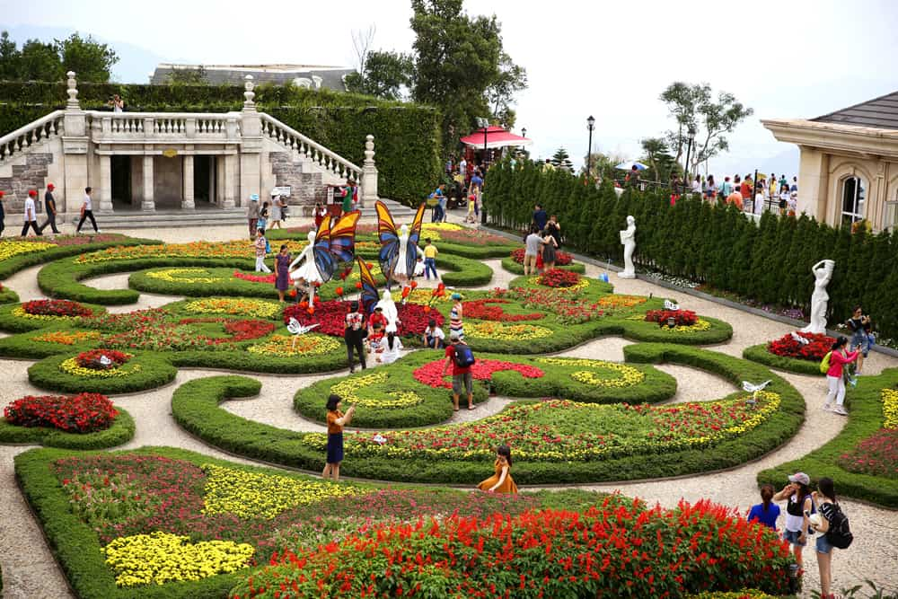
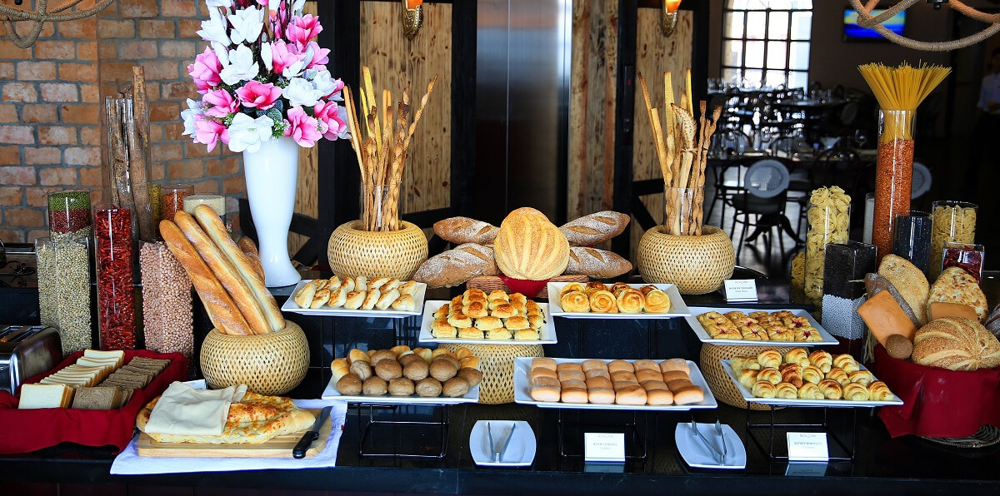

Bà Nà Hills là điểm du lịch đầy hấp dẫn của thành phố Đà Nẵng. Đã từ lâu, "ngọn đồi" này được xem là "con át chủ bài" thu hút hàng ngàn lượt khách du lịch đổ về Đà Nẵng mỗi năm
Bà Nà Hills thuộc huyện Hòa Vang, nằm cách trung tâm Đà Nẵng khoảng 25km về phía Tây Nam, nằm ở độ cao 1487m so với mực bước biển. Bà Nà được ví von như Đà Lạt của miền trung hay "lá phổi xanh", "hòn ngọc khí hậu" của Việt Nam.
Khi nhắc đến tên gọi “Bà Nà”, có rất nhiều người muốn biết về nguồn gốc của tên này. Và hiện nay có tới 4 cách giải thích về tên gọi này, đó là:
Từ trung tâm Đà Nẵng tới Bà Nà có rất nhiều cách như bạn thuê xe máy để tự đi, thuê xe taxi hoặc xe ô tô trọn gói…
Tuy nhiên, để phù hợp nhất vào việc các bạn đi với ai và chi phí bao nhiêu để có thể đưa ra phương án lựa chọn phương tiện tới Bà Nà Hills cho thích hợp.

Để lên Bà Nà Hills, du khách còn có thể đi cáp treo. Theo mình nghĩ thì khi đã ghé thăm Bà nà thì đừng bỏ lỡ trải nghiệm Cáp treo Bà Nà Hills.
Hệ thống cáp treo được xây dựng đúng theo công nghệ châu Âu, đảm bảo tiêu chuẩn của Hiệp hội cáp treo châu Âu.
Cáp treo Bà Nà không chỉ phục vụ vận chuyển hành khách lên xuống "Đà Lạt của miền Trung" mà còn là một sản phẩm du lịch rất hấp dẫn.
Từ carbin cáp treo lơ lửng giữa lưng chừng mây nhìn xuống là 1 bức tranh hoàn mỹ, đầy màu sắc với bốn bề mây phủ điệp trùng giữa núi rừng, thác nước…sẽ mang lại cho bạn những cảm giác vô cùng thú vị.
Đây là tuyến cáp treo một dây dài nhất thế giới với tổng chiều dài là 5 042,62m. Bạn sẽ mất khoảng 15-20 phút để di chuyển
từ chân núi lên đỉnh Bà Nà bằng hệ thống này.
Giá vé bạn có thể tham khảo trên các trang du lịch.
Siêu phẩm Cây Cầu Vàng Đà Nẵng trên đỉnh Bà Nà Hill vừa được trình làng thơ mộng khiến cánh báo giới quốc tế không ngớt lời ca ngợi. Với thiết kế vô cùng ấn tượng, hai bàn tay rêu phong to lớn vươn ra từ thân núi nắm lấy tấm lụa vàng lơ lửng giữa trời, tuyệt tác này còn được mọi người nhắc đến với cái tên Cầu Bàn Tay – một trong những địa điểm đẹp sống ảo không thể bỏ qua khi đi du lịch Đà Nẵng. Với độ dài 150 mét và nằm ở độ cao 1414 mét so với mực nước biển, cây Cầu Vàng đã tạo nên một lối đi giữa không trung, giữa khung ảnh mờ sương như chốn bồng lai tiên cảnh của núi Bà Nà. Đứng ở vị trí đôi bàn tay rêu phong, du khách có thể ngắm nhìn những cánh rừng nguyên sinh trải dài tít tắp, xa xa là toàn cảnh thành phố Đà Nẵng xinh đẹp.
Là một vườn hoa với diện tích khổng lồ 8 206m2 nằm tại phía Đông của núi Bà Nà. Vườn hoa thu hút du khách bởi khí hậu luôn mát mẻ dễ chịu và muôn vàn loài hoa đẹp. Đặc biệt, ở đây gồm có 9 khu vườn nhỏ với kiến trúc độc đáo khác nhau là vườn Suối Mơ, vườn Địa Đàng, vườn Bí Ẩn, vườn Uyên Ương, vườn Suy Tưởng, vườn Thần Thoại, vườn, Ký Ức, vườn Thiêng và vườn nho. Đến với vườn hoa phong cách Pháp "Le Jardin d’Amour", du khách còn được đắm say với nhiều loài hoa quý hiếm và đầy màu sắc như cẩm tú cầu, lavender, Xác pháo Nữ Hoàng, đào chuông, cúc bách nhật…
Đến với ngôi làng Pháp, các bạn sẽ được trải nghiệm một nước Pháp đầy lãng mạn và cổ điển với dấu ấn phong cách từ thế kỷ thứ 20 với những công trình kiến trúc độc đáo như hàng loạt lâu đài lãng mạn, Thánh đường St Denis, Brittany, ngôi làng nhỏ nhắn Apremont sur Allier, quảng trường, khách sạn, làng mạc, thị trấn… Ngoài ra, tại ngôi làng Pháp xinh đẹp này còn sở hữu nhiều dịch vụ tiện ích hiện đại như: bể bơi khép kín, hệ thống spa đẳng cấp, phòng hội nghị, khu vực mua sắm, café quán bar, chương trình giải trí bốn mua dành cho trẻ em và người lớn…
Theo lịch sử Bà Nà Hill, hầm rượu Debay được biết đến là công trình kiến trúc vô cùng đặc sắc được người Pháp xây dựng với tuổi đời hiện nay đã gần 100 năm tuổi. Hầm rượu Debay rộng 2m với chiều dài 100m được xây dựng từ vật liệu đá núi, vữa và luôn có nhiệt độ lý tưởng từ 16 – 20 độ C để lưu giữ được nhiều loại rượu vang cổ thời Pháp xa xưa. Ngoài ra, bên trong nơi này còn có lò sưởi, hầm chưng cất, hầm cất giữ, quầy bar. Chính vì vậy một hoạt động không kém phần thú vị bên cạnh việc tham quan đó chính là thưởng thức thịt nướng, nhấm nháp ly rượu vang cũng như mua sắm về làm quà những loại rượu vang hảo hạng về làm quà.
Đến với Bà Nà Hills, bạn có hai sự lựa chọn: tự đem theo đồ ăn hoặc ăn theo thực đơn tại các nhà hàng. Với lựa chọn đầu tiên, bạn sẽ tiết kiệm được khá nhiều chi phí. Tuy nhiên, vấn đề ở đây là mang vác lỉnh kỉnh cũng sẽ khiến bạn đau đầu, mất vui. Lựa chọn thứ hai, ăn tại nhà hàng sẽ giúp bạn rảnh rang tay chân hơn. Nếu ví tiền rủng rỉnh thì chẳng dại gì mà không chọn phương án này cả, vừa khỏe người mà còn được thưởng thức thêm nhiều món ăn ngon. Ngoài ra, đối với những ai có ý định lưu trú tại Đà Nẵng và thuê xe một ngày đi Bà Nà Hills thì bạn cũng có thể ghé vào các quán ăn ở Đà Nẵng ăn lót dạ trước khi lên đường. Đây cũng là cách mà tôi thường làm mỗi khi đến đây.
